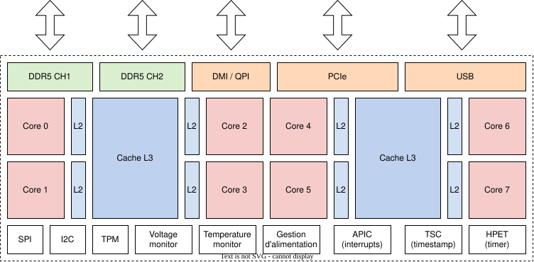
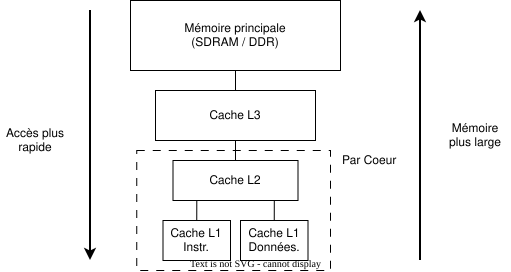
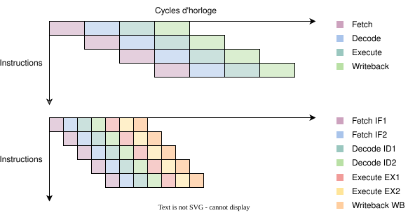
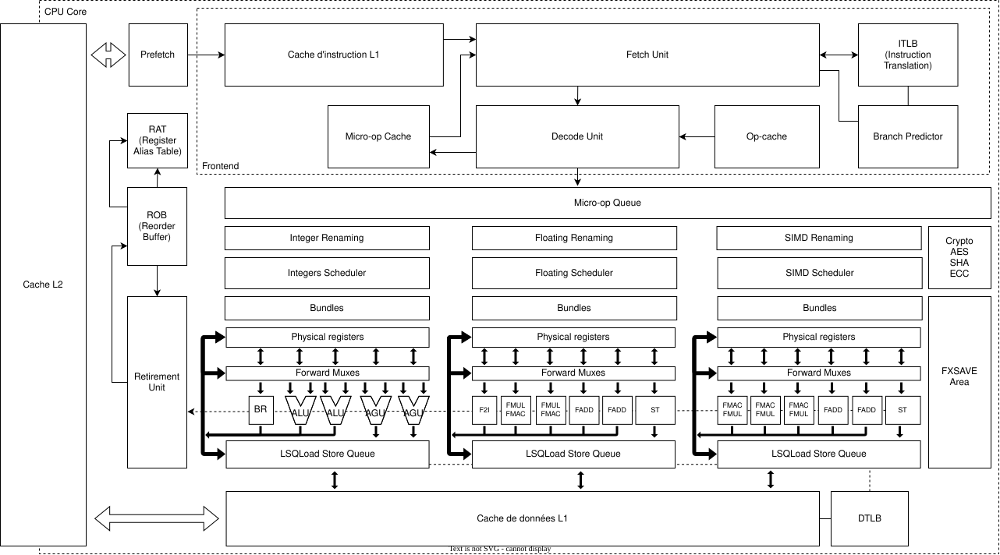
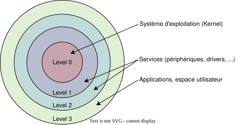
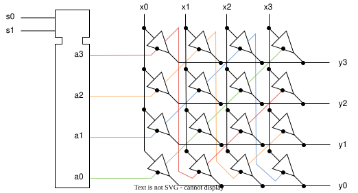

Processeur¤
Introduction¤
Le processeur est souvent présenté comme le cerveau de l'ordinateur. Cette unité centrale de traitement (CPU) exécute les instructions et réalise les calculs nécessaires au fonctionnement du système informatique. Par analogie avec la Machine de Turing, un processeur est un automate Turing-complet qui traite les instructions de façon séquentielle. Pour ce faire, il s'appuie sur une mémoire de travail, où sont stockés les calculs en cours, et sur une mémoire de programme qui contient la liste des opérations à effectuer.
Une mémoire s'utilise comme un livre : pour accéder à une information, il faut l'ouvrir à une page précise, l'adresse. En pratique, les mémoires modernes sont adressables au niveau de l'octet. Avec un bus d'adresses sur 64 bits, il est possible de désigner \(2^{64}\) octets, soit 16 exaoctets, de quoi voir venir pendant de nombreuses décennies.
Depuis le début de l'ère informatique, les processeurs se perfectionnent sans relâche pour offrir des performances toujours plus élevées. Leur architecture contemporaine est extrêmement riche, et nous n'en ferons pas une étude exhaustive dans ce cours. Nous nous concentrerons cependant sur les composants et les fonctionnalités clés qui permettent de comprendre leur fonctionnement.

Architecture de bus¤
Comme évoqué, le processeur dialogue essentiellement avec la mémoire. Celle-ci peut être reliée au processeur selon plusieurs schémas : on parle alors d'architecture de bus. Les deux modèles historiques sont l'architecture de von Neumann et l'architecture Harvard, qui se différencient principalement par leur gestion de la mémoire et des bus de données.
Chaque modèle présente ses forces et ses limites, et ils sont employés dans des contextes variés en fonction des contraintes du système.

Dans le modèle de John von Neumann (a), instructions et données partagent une mémoire unifiée, et le processeur utilise le même bus pour y accéder. L'architecture reste ainsi simple et flexible, mais elle peut créer des goulets d'étranglement lorsque instructions et données sont demandées simultanément.
L'architecture Harvard, elle, sépare instructions et données dans des mémoires distinctes, chacune desservie par son propre bus. Le processeur peut alors récupérer une instruction et une donnée en parallèle, ce qui améliore les performances globales.
Les processeurs modernes (x86-64, ARM, etc.) adoptent une approche hybride qui marie les deux modèles. Les caches de niveau 1 et 2 isolent souvent instructions et données, tandis que la mémoire principale reste organisée à la manière de von Neumann. Cette combinaison permet de tirer parti des atouts de chaque architecture.
Structure interne¤
Un processeur moderne prend la forme d'une puce de silicium (die) d'environ 1 à 2 cm². Elle renferme plusieurs milliards de transistors organisés en blocs fonctionnels spécialisés afin d'assurer toutes les opérations nécessaires.


La figure ci-dessus représente un diagramme simplifié d'un processeur. Celui-ci comporte huit cœurs (ou cores), qui constituent ses unités de calcul principales. Historiquement, les processeurs n'offraient qu'un seul cœur, mais la montée en puissance des applications et la difficulté à augmenter encore la fréquence d'horloge ont poussé les fabricants vers le multicœur. Chaque cœur dispose d'une mémoire ultra-rapide appelée cache L2, comparable à une mémoire de travail à court terme qui permet, par exemple, de retenir un numéro de téléphone le temps de le composer. Au centre, une mémoire cache L3 partagée facilite l'accès aux données communes à plusieurs processus. En haut à gauche, deux contrôleurs de mémoire relient la puce aux barrettes de RAM.
Le DMI (Direct Media Interface chez Intel) ou le QPI (QuickPath Interconnect) relie le processeur au chipset, lequel gère les périphériques externes (USB, SATA, Ethernet, etc.). Le bus PCIe (Peripheral Component Interconnect Express) accueille des cartes d'extension comme les cartes graphiques ou les dispositifs de stockage NVMe. Enfin, la puce expose souvent une ou plusieurs connexions USB 3.x directement sur son boîtier.
Lorsqu'un programme démarre, le système d'exploitation le charge en mémoire puis désigne un cœur pour l'exécuter. Un processeur à huit cœurs peut donc gérer jusqu'à huit tâches simultanées. Dans certaines conditions, il peut en traiter jusqu'à seize grâce à l'hyper-threading, une technologie qui permet à chaque cœur physique de présenter deux cœurs logiques et d'exploiter plus finement les ressources disponibles.
Mémoire cache¤
La mémoire cache est un élément clé de la performance d'un processeur. Elle stocke temporairement les données les plus fréquemment utilisées, accélérant leur accès et améliorant les performances globales du système. Souvenez-vous que la vitesse de propagation des signaux reste limitée : avec une « autoroute » de 20 à 30 cm entre processeur et mémoire, ponctuée de péages et de bouchons, le processeur peut exécuter entre 50 et 200 opérations avant qu'une donnée ne soit transférée depuis la RAM. La mémoire cache joue donc le rôle de tampon, installée au plus près du cœur de calcul, directement sur la puce. Un processeur moderne comporte plusieurs niveaux de cache.
- L1
-
Elle est extrêmement rapide mais minuscule (quelques Kio). Elle se divise en deux blocs, l'un pour les instructions et l'autre pour les données, conformément au modèle Harvard. Chaque cœur possède sa propre L1.
- L2
-
Elle est plus vaste (quelques Mio) et légèrement plus lente que la L1. Propre à chaque cœur, elle mélange instructions et données à la manière de von Neumann.
- L3
-
Encore plus grande (quelques dizaines de Mio) et plus lente que la L2, elle est partagée par l'ensemble des cœurs et mêle instructions et données.
Voici sur la figure suivante un exemple de hiérarchie de mémoire cache pour un processeur moderne. Plus l'accès est rapide, plus la mémoire est petite et plus elle est proche du processeur.


Quand on vise la performance, même sans maîtriser chaque détail de l'architecture interne, il faut garder en tête le rôle central de la mémoire cache. Un programme apparemment soigné mais ignorant les contraintes de cache peut se révéler des dizaines de fois plus lent qu'une version pensée pour respecter ces limites. Que faut-il retenir ?
On peut comparer la mémoire cache à un précieux pense-bête. Sans quitter votre salon, vous vous souvenez que de magnifiques renoncules s'épanouissent à l'ombre du cerisier de votre grand-mère — à condition qu'aucun mouton ne les ait grignotées entre-temps. Impossible d'en avoir la certitude tant que vous n'êtes pas allé vérifier sur place. Autre contrainte : ce pense-bête ne contient que quelques pages, alors que le jardin de votre grand-mère ressemble à Versailles. Vous ne pouvez pas tout y consigner.
En pratique, la mémoire cache ne reste utile que si les copies qu'elle abrite demeurent synchronisées avec la mémoire principale. Si un autre programme ou un autre cœur modifie une donnée, le cache doit être mis à jour. De même, lorsqu'on accède à une donnée absente du cache, il faut la charger depuis la mémoire principale et évincer l'une des entrées existantes, faute d'espace. Ces difficultés portent des noms spécifiques :
- Cohérence de cache
-
Il s'agit de garantir que les copies en cache reflètent bien la mémoire principale. Plusieurs protocoles, comme MESI (Modified, Exclusive, Shared, Invalid), coordonnent les accès concurrents aux données.
- Consistance de cache
-
Elle consiste à maintenir une vision uniforme des données entre les différents caches. Lorsqu'un cœur modifie une valeur, les autres doivent en être informés pour éviter les incohérences.
Un programme qui interagit avec la mémoire cache peut rencontrer deux cas de figure :
- Cache miss
-
La donnée cherchée n'est pas en cache ; le processeur doit la rapatrier depuis la mémoire principale, beaucoup plus lente, ce qui pénalise les performances.
- Cache hit
-
C'est l'inverse : la donnée se trouve déjà en cache. L'accès devient quasi immédiat, ce qui accélère nettement l'exécution (une excellente nouvelle !).
Si une donnée se trouve en cache L1, le processeur la charge en un seul cycle d'horloge. Depuis le cache L2, quelques cycles supplémentaires sont nécessaires. Le tableau suivant récapitule des ordres de grandeur typiques :
| Niveau de cache | Temps d'accès (cycles d'horloge) | Taille de mémoire |
|---|---|---|
| L1 | 4-5 | 32 Kio |
| L2 | 10-20 | 256 Kio à 1 Mio |
| L3 | 30-60 | 2 Mio à 64 Mio |
| RAM | 100-200 | 8 Gio à 64 Gio |
La mémoire cache repose sur le principe de la localité, qui se décline en deux formes :
- Localité temporelle
-
C'est le principe selon lequel si une donnée a été accédée récemment, il y a de fortes chances qu'elle soit accédée à nouveau dans un proche avenir. C'est pourquoi les données récemment accédées sont stockées en cache pour accélérer les accès futurs.
- Localité spatiale
-
C'est le principe selon lequel si une donnée a été accédée, il y a de fortes chances que les données voisines soient également accédées. C'est pourquoi les données sont stockées en blocs contigus en cache pour améliorer les performances.
Une donnée que l'on n'a pas consultée depuis longtemps risque de ne plus résider dans le cache. De même, une valeur éloignée en mémoire d'une donnée récemment lue a peu de chances d'y figurer. Il est donc essentiel de structurer son programme pour exploiter au mieux la localité temporelle et spatiale.
Autre point essentiel : la mémoire cache fonctionne par lignes de cache. Une ligne contient typiquement 64 octets contigus. Lorsqu'une donnée est chargée depuis la RAM, le système rapatrie aussi les octets voisins appartenant à cette ligne. Cette stratégie optimise les accès successifs à des zones proches. En matière de débit, imaginez un convoi : envoyer dix camions de Zurich à Lausanne ne prend guère plus de temps qu'un seul, car la limite réelle vient du trajet lui-même.
Ce mécanisme a cependant un revers : si une donnée d'une ligne est invalidée, c'est toute la ligne qui doit être actualisée. Pour un octet modifié, ce sont donc 64 octets qu'il faudra recharger depuis la mémoire principale.
Pour mieux comprendre ces limites, examinons un exemple en C. Nous disposons d'une matrice de 100'000 × 100'000 éléments et souhaitons calculer la somme de toutes les cases. Une implémentation naïve ressemble à ceci :
#include <stdio.h>
#define N 100'000
int matrix[N][N];
int main() {
long long int sum = 0;
for (int i = 0; i < N; i++) {
for (int j = 0; j < N; j++) {
sum += matrix[i][j];
}
}
printf("Sum: %lld\n", sum);
}
Chaque ligne de la matrice représente environ 390 Kio. Une ligne de cache L1 contient 64 octets, soit 16 entiers de 4 octets. Au début du programme, lorsque l'on accède à matrix[0][0], le processeur interroge d'abord L1, puis L2 et L3 avant d'aller chercher la donnée en RAM. Au passage, il détecte que les éléments voisins seront sans doute sollicités et précharge plusieurs lignes en L3, puis en L2 et en L1. Les accès suivants s'en trouvent grandement accélérés.
Considérons maintenant le même programme avec une légère modification :
Nous avons inversé i et j. Au lieu de parcourir la matrice linéairement, chaque lecture entraîne un saut d'environ 390 Kio. Les données voisines préchargées ne sont plus utiles : à chaque itération, le cache doit retourner en RAM.
La première version s'exécute environ 10 à 20 fois plus vite que la seconde. Cet exemple illustre l'importance de la localité spatiale dans les performances d'un programme.
Pipeline¤
Pour délivrer davantage d'instructions par seconde, les processeurs modernes s'appuient sur le pipeline. Une instruction ne s'exécute pas en bloc : elle traverse une succession d'étapes (chargement, décodage, exécution, accès mémoire, écriture du résultat). En les chaînant comme sur une ligne d'assemblage, le processeur traite simultanément plusieurs instructions à des stades différents.


Cette organisation se compare volontiers à une cuisine professionnelle : pendant qu'une personne prend la commande suivante, la cheffe ou le chef décode la précédente, un·e commis prépare les ingrédients et un autre dresse l'assiette. Si tout se déroule sans accroc, un plat sort à chaque « cycle ». Au moindre imprévu — commande annulée, ingrédient manquant — la chaîne doit être purgée et relancée : c'est le pipeline stall.
Dans un processeur, ce type d'interruption survient notamment lors d'un embranchement (if, while, for). Tant que la condition n'est pas évaluée, il ignore quelle suite d'instructions préparer. Les architectures récentes s'équipent donc d'un prédicteur de branchement : elles parient sur le chemin le plus probable, chargent les instructions correspondantes et ne paient le coût d'un stall qu'en cas d'erreur. Les microcontrôleurs plus modestes, dépourvus de prédicteur, doivent attendre le résultat et accumulent davantage de bulles dans leur pipeline.
Cœur¤
Le cœur du processeur est un monstre de technologies. Il est composé de plusieurs unités fonctionnelles qui travaillent ensemble pour exécuter les instructions.

L'objectif ici n'est pas d'entrer dans le détail de chaque unité, mais d'avoir un aperçu général du fonctionnement. La figure suivante représente la structure interne d'un processeur moderne.


On voit le cache L3 partagé par tous les cœurs, en dehors de ce dernier. Le cache L2 est propre à chaque cœur et communique par un bus à 256 bits avec le cache L1. Le cache L1 est divisé en deux parties, une pour les instructions et une pour les données.
Prenons le chemin d'une instruction. Une fois chargée dans L1, l'unité de Fetch s'occupe de charger l'instruction dans le pipeline. L'unité de Decode décode l'instruction pour déterminer l'opération à effectuer. Dans un processeur moderne, une instruction assembleur est en réalité scindée en plusieurs micro-opérations qui sont exécutées par les différentes unités fonctionnelles du processeur. Les instructions font souvent référence à des registres du processeur, qui sont des emplacements de mémoire ultra-rapide utilisés pour stocker des données temporaires. Ces registres sont renommés (rebaptisés) pour accroître les performances de calculs. Aussi, les micro-opérations sont réagencées pour optimiser l'utilisation des unités fonctionnelles. Par exemple, si une instruction doit attendre le résultat d'une autre instruction, le processeur peut exécuter une autre instruction en attendant. C'est ce qu'on appelle l'exécution hors ordre.
Ces micro-opérations une fois établies sont placées dans une file d'attente pour ensuite être transmises aux unités fonctionnelles via l'issue port.
On distingue généralement les unités fonctionnelles suivantes :
- Unité arithmétique et logique (ALU) : Elle effectue les opérations arithmétiques et logiques sur des entiers.
- Unité de calcul en virgule flottante (FPU) : Elle effectue les opérations arithmétiques sur des nombres à virgule flottante.
- Unité de calcul d'adresse (AGU) : Elle calcule les adresses mémoire pour les accès en lecture et en écriture.
- Unité de branchement (Branch Unit) : Elle gère les instructions de branchement (if, for, while, etc.).
Registres¤
Traditionnellement, un processeur met à disposition des registres de travail. Ce sont de très petites zones de mémoire ultra-rapides où l'on conserve des données temporaires et des résultats intermédiaires de calculs. Les registres agissent comme un prolongement immédiat de l'unité de calcul : plus rapides que la mémoire cache, mais en nombre restreint, ils sont essentiels pour exécuter efficacement les instructions.
Imaginons un processeur très primitif. Il ne peut faire que cinq choses :
- Additionner deux registres
- Soustraire deux registres
- Déplacer une valeur d'un registre à un autre
- Sauter à une autre instruction
- Sauter à une autre instruction si un registre est nul
La programmation est impérative, les instructions sont exécutées séquentiellement. Pour déplacer une valeur du registre R0 au registre R1, on écrirait MOV R1, R0. Pour ajouter deux valeurs, on écrirait ADD R2, R0, R1. Pour sauter à une autre instruction si un registre est nul, on écrirait JNZ R0, 10 (sauter à l'instruction 10 si R0 n'est pas nul).
Tenant compte de ces précisions, l'algorithme serait alors le suivant, où le calcul du reste de la division est calculé par des soustractions successives :
01 MOV R0, 30 # a
02 MOV R1, 42 # b
03 MOV R2, R1 # Met b dans R2
04 JNZ R2, 6 # Si b vaut 0 alors saute à l'instruction 6
05 JMP 16 # Saute à l'instruction 16
06 MOV R3, R0 # Met a dans R3
07 MOV R4, 0 # Met 0 dans R4
08 SUB R3, R1 # Soustrait b à a
09 JNZ R3, 11 # Si le résultat est nul, saute à l'instruction 11
10 JMP 13 # Saute à l'instruction 13
11 ADD R4, 1 # Incrémente le reste de la division
12 JMP 8 # Saute à l'instruction 8 (boucle)
13 MOV R0, R1 # Met b dans a
14 MOV R1, R3 # Met le reste de la division dans b
15 JMP 3 # Saute à l'instruction 3 (boucle)
16 NOP # Fin du programme
Dans un processeur moderne, il y a également des registres mais qui ont des noms différents. Par exemple, dans un processeur x86-64, on a les registres suivants :
- Registres généraux : RAX, RBX, RCX, RDX, RSI, RDI, RBP, RSP, R8-R15
- Registres de segment : CS, DS, ES, FS, GS, SS
- Registres d'index : RSI, RDI, RBP, RSP
- Registres de pointeur : RIP, RFLAGS
- Registres de contrôle : CR0-CR4
- Registres SIMD : XMM0-XMM15, YMM0-YMM15, ZMM0-ZMM31
Depuis longtemps, les processeurs sont capables d'exécuter plusieurs instructions en parallèle. Cela signifie que les registres sont partagés entre les différentes instructions. Par exemple, si une instruction veut ajouter deux valeurs, elle doit attendre que les registres soient disponibles et c'est un goulet d'étranglement. Pour éviter cela, les processeurs modernes utilisent une technique appelée renommage des registres. Les registres que l'on utilise pour programmer n'existent pas réellement dans le processeur mais ils sont associés à des registres physiques. Cela permet d'éviter les conflits entre instructions qui voudraient utiliser le même registre en même temps.
On parle d'architectures hors ordre superscalaires. Les instructions y sont décodées dans l'ordre du programme, mais elles peuvent être exécutées, finalisées puis « retraitées » dans un ordre différent afin de saturer les unités de calcul. Pour cela, les processeurs modernes — Intel Core, AMD Ryzen et consorts — utilisent une table de renommage qui associe les registres visibles par le programmeur à des registres physiques disponibles.
- Décodage et renommage : chaque registre architectural est temporairement relié à un registre physique libre.
- Exécution hors ordre : les micro-opérations sont planifiées selon les ressources libres ; l'ordre du code source n'est plus contraignant.
- Retrait : une fois validées, les instructions restituent leurs résultats dans l'ordre du programme grâce au Reorder Buffer (ROB), garantissant une vision cohérente pour le logiciel.
Le ROB et l'unité de retrait veillent ainsi à ce que, malgré l'exécution hors ordre, les registres visibles — comme RAX ou RBX — soient mis à jour de manière strictement séquentielle.
L'assembleur¤
Avant le C, le Fortran ou le Cobol, il était possible de programmer directement en assembleur. L'assembleur est le langage du plus bas niveau que l'on puisse utiliser pour programmer un ordinateur. Il se compose des instructions primitives que le processeur peut exécuter directement. Ces instructions primitives sont généralement très simples, comme ajouter deux nombres, déplacer des données d'un emplacement à un autre, ou effectuer des opérations logiques sur des bits.
Nos processeurs modernes étant déjà très complexes, les instructions de base de l'assembleur sont également complexes. L'architecture X86-64 dispose d'environ 200 instructions différentes. Charger une valeur à une adresse mémoire contenue dans le registre RBX dans le registre RAX s'écrirait MOV RAX, [RBX], et cette ligne d'assembleur peut être traduite en langage machine 488B03.
4 Utilisation des registres étendus (64 bits)
8 Utilisation des registres hauts (RAX, RBX)
8B Instruction MOV
03 ModRM qu'il faut décortiquer:
0b00 Adressage indirect
0b000 Registre 0 (RAX)
0b011 Registre 3 (RBX)
Écrire un programme en langage machine est compliqué et fastidieux. C'est pourquoi on utilise un langage textuel appelé assembleur qui peut facilement être converti en langage machine.
Pour mieux comprendre, admettons que l'on souhaite réécrire notre programme hello.c mais en assembleur (hello.s). Ici, il ne faut pas imaginer accéder directement à l'écran pour écrire du texte. Il faut passer par le système d'exploitation. Pour cela, on utilise les appels système. C'est exactement ce que fait printf. Vous noterez la présence de nombreux commentaires, il est courant d'ajouter des commentaires pour mieux expliquer le code assembleur qui est souvent, par sa nature assez cryptique :
section .data
message db "Hello, World!", 0xA
len equ $-message ; Taille du message
section .text
global _start
_start:
; Appel système pour écrire (sys_write)
mov rax, 1 ; Numéro d'appel système pour sys_write
mov rdi, 1 ; Descripteur de fichier 1 (stdout)
mov rsi, message ; Adresse du message
mov rdx, len ; Longueur du message
syscall ; Appel système
; Appel système pour terminer le programme (sys_exit)
mov rax, 60 ; Numéro d'appel système pour sys_exit
xor rdi, rdi ; Code de sortie 0 (plus rapide que mov rdi, 0)
syscall ; Appel système
Pour le compiler, on utilisera nasm et ld :
Ce programme ne comporte que deux appels système : write et exit.
Admettons que l'on souhaite multiplier 12345 avec 67890 et afficher le résultat sur la sortie standard. Ce programme est déjà plus compliqué. Les deux valeurs peuvent être stockées dans un registre 64 bits comme rax et rbx. Pour afficher le résultat, il faut convertir le nombre en chaîne de caractères, c'est ce que fait normalement %d dans printf mais ici nous sommes en assembleur, nous n'avons pas accès à cette fonction facilement. La stratégie est donc de diviser le nombre par 10 et de stocker le reste dans un tampon. On répète l'opération jusqu'à ce que le quotient soit nul. Ensuite, on inverse le tampon pour obtenir le nombre correct.
section .data
message db "12345 * 67890 = " ; Message à afficher
len equ $-message ; Taille du message
section .bss
buffer resb 20 ; Tampon pour stocker le résultat converti
section .text
global _start
; Fonction int_to_string : Convertit un entier en chaîne de caractères
; Entrée : rdi = entier à convertir, rsi = tampon pour stocker la chaîne (ptr)
; Sortie : rbx = longueur de la chaîne (entier)
int_to_string:
mov rbx, 0 ; Longueur initiale de la chaîne
mov rcx, 10 ; Diviseur (10 pour conversion décimale)
.convert_loop:
xor rdx, rdx ; Réinitialiser rdx
div rcx ; Diviser rax par 10, quotient dans rax, reste dans rdx
add dl, '0' ; Convertir le chiffre en caractère ASCII
dec rsi ; Déplacer le pointeur dans le tampon
mov [rsi], dl ; Stocker le caractère dans le tampon
inc rbx ; Augmenter la longueur de la chaîne
test rax, rax ; Vérifier si le quotient est zéro
jnz .convert_loop ; Si ce n'est pas zéro, continuer la conversion
; Retourner le début de la chaîne
mov rax, rsi ; Placer le pointeur vers la chaîne convertie dans rax
ret
_start:
; Afficher le message
; rax = 1 (sys_write), rdi = 1 (stdout), rsi = message, rdx = len
mov rax, 1
mov rdi, 1
mov rsi, message
mov rdx, len
syscall
; Multiplication non signée de 12345 par 67890
mov rax, 12345
mov rbx, 67890
imul rax, rbx
; Appel de la sous-routine pour convertir l'entier en chaîne
; rdi = rax (résultat calcul), rsi = buffer + 20 (fin du tampon)
mov rdi, rax
mov rsi, buffer + 20
call int_to_string
; Afficher le résultat (chaîne convertie)
; rax = 1 (sys_write), rdi = 1 (stdout), rdx = longueur de la chaîne
mov rax, 1
mov rdi, 1
mov rdx, rbx
syscall
; Fin du programme
; rax = 60 (sys_exit), rdi = 0 (code de sortie)
mov rax, 60
xor rdi, rdi
syscall
Fonctionnalités internes¤
Protection ring¤
Les protection rings (ou anneaux de protection) sont un mécanisme de sécurité utilisé dans l'architecture des processeurs, principalement dans les systèmes d'exploitation modernes, pour contrôler l'accès aux ressources du système par différents types de code (comme les applications ou les composants du système d'exploitation).
L'idée des anneaux de protection repose sur la séparation des niveaux de privilège ou de contrôle en plusieurs couches. Chaque couche, ou ring (anneau), est un niveau de privilège qui détermine ce qu’un programme ou une instruction peut faire. Dans l'architecture x86 d'Intel, il y a généralement quatre anneaux (de 0 à 3), bien que les systèmes d'exploitation modernes n’utilisent souvent que deux de ces niveaux (Ring 0 et Ring 3).


Le ring 0 correspond au noyau (kernel) du système d'exploitation, qui a accès à toutes les ressources matérielles de l'ordinateur. Il peut exécuter n'importe quelle instruction, accéder à la mémoire directement, et gérer le matériel sans restriction. On parle souvent de mode superviseur ou mode noyau pour désigner les opérations effectuées dans cet anneau. C’est le niveau le plus privilégié.
Les niveaux intermédiaires 1 et 2 peuvent être utilisés par certains systèmes pour les pilotes ou des services du système qui ont besoin d'un accès contrôlé aux ressources, mais ne nécessitent pas le même niveau de privilège que le noyau. Toutefois, la plupart des systèmes d'exploitation modernes ne les utilisent pas directement.
Enfin, le niveau 3 est réservé aux applications utilisateur. Il s’agit du mode utilisateur (user mode), dans lequel les programmes n’ont pas un accès direct au matériel ou à la mémoire, et doivent passer par des appels système pour demander des services au noyau. En cas de violation des règles (comme essayer d’accéder directement au matériel), une exception ou une erreur est générée, et le programme est bloqué.
Mémoire cache¤
Les caches L1, L2 puis L3 se sont imposés progressivement entre les années 1980 et 2000. Le cache de premier niveau est extrêmement rapide et intégré au cœur ; le L2, plus grand, a d'abord été externe avant de migrer sur la puce ; le L3, partagé entre plusieurs cœurs, complète aujourd'hui la hiérarchie pour amortir les accès à la mémoire principale.
FPU¤
Les coprocesseurs mathématiques x87 ont popularisé la gestion matérielle de la virgule flottante. Depuis, les unités de calcul vectoriel (SSE, AVX) manipulent simultanément plusieurs nombres sur des registres de 128, 256 voire 512 bits et offrent des précisions simple, double ou étendue.
Virtualisation (Intel VT-x, AMD-V)¤
Introduites dans les années 2000, ces extensions matérielles accélèrent l'exécution de machines virtuelles en leur donnant accès à des instructions et à des modes de fonctionnement dédiés, tout en conservant un strict cloisonnement avec l'hôte.
Réduction de consommation¤
Des technologies comme Intel SpeedStep ou AMD Cool'n'Quiet adaptent dynamiquement la fréquence et la tension du processeur pour réduire la consommation énergétique lorsque la charge diminue.
Pipeline très profond¤
Certaines microarchitectures, comme NetBurst sur le Pentium 4, ont poussé le pipeline au-delà de 30 étages pour atteindre des fréquences élevées. Ce choix a toutefois augmenté la pénalité en cas de mauvaise prédiction et a fini par montrer ses limites.
Micro-opérations et ordonnanceur¤
Les cœurs modernes découpent les instructions complexes en micro-opérations plus simples. Un ordonnanceur interne les redistribue ensuite vers les unités d'exécution disponibles afin de maximiser le parallélisme.
ALU¤
L'Arithmetic Logic Unit (ALU) est l'une des principales composantes d'un processeur. C'est l'unité qui effectue les opérations arithmétiques et logiques sur les données. L'ALU est capable d'effectuer des opérations telles que l'addition, la soustraction, la multiplication, la division, les opérations logiques (ET, OU, NON, XOR), les décalages de bits, etc.
Barrel Shifter¤
Le barrel shifter est un circuit logique qui permet de décaler un nombre binaire vers la gauche ou vers la droite. Il est utilisé dans les processeurs pour effectuer des opérations de décalage et de rotation sur les données. Sur un processeur 32 bits, le barrel shifter peut effectuer des décalages de 1 à 31 bits en une seule opération, ce qui le rend très efficace pour les opérations de manipulation de bits.


Rappelons qu'un décalage des bits vers la gauche correspond à une multiplication par 2, tandis qu'un décalage vers la droite correspond à une division par 2. Les puissances de 2 sont donc très efficaces car elles correspondent à des décalages de bits pouvant être effectués très rapidement par le barrel shifter.
Un barrel shifter peut également gérer la rotation des bits, c'est-à-dire déplacer les bits d'un mot binaire d'un certain nombre de positions vers la gauche ou vers la droite, en déplaçant les bits qui sortent d'un côté à l'autre du mot. Cela permet de réaliser des opérations de permutation et de cryptographie sur les données.
Dans un processeur ARM, une instruction de décalage peut être incluse directement dans une instruction arithmétique, ce qui permet d'effectuer des opérations de décalage en même temps que des opérations arithmétiques, sans avoir besoin d'une instruction séparée pour le décalage :
SSE et AVX¤
Les instructions SSE (Streaming SIMD Extensions) sont une extension de l'architecture x86 introduite par Intel en 1999 avec les processeurs Pentium III. Elles permettent d'effectuer des opérations vectorielles sur des registres de 128 bits (xmm), ce qui améliore les performances pour les calculs intensifs en parallèle.
Les instructions AVX (Advanced Vector Extensions) sont une extension de l'architecture x86 introduite par Intel en 2011 avec les processeurs Sandy Bridge. Elles permettent d'effectuer des opérations vectorielles sur des registres de 256 bits (ymm), et avec l'AVX-512 sur des registres de 512 bits (zmm), ce qui améliore les performances pour les calculs intensifs en parallèle.
Le SIMD (Single Instruction, Multiple Data) est une technique de parallélisme de données qui permet d'effectuer la même opération sur plusieurs données simultanément.
Les applications possibles sont nombreuses : filtre d'image, mélange de couleurs, compression d'image, traitement audio, multiplication de matrices, etc.
Dans gcc, on peut utiliser les options -msse ou -msse2 pour activer les instructions SSE, alternativement on peut utiliser -march=skylake pour activer les instructions SIMD spécifiques à l'architecture du processeur.
void compute(const float * restrict a,
const float * restrict b, float * restrict c)
{
for (int i = 0; i < 8; i++)
c[i] = a[i] + b[i];
}
Ce code compile en donnant l'assembleur suivant :
compute:
vmovups ymm0, ymmword ptr [rdi]
vaddps ymm0, ymm0, ymmword ptr [rsi]
vmovups ymmword ptr [rdx], ymm0
vzeroupper
ret
Notons ici que le mot clé restrict est indispensable pour indiquer au compilateur que les pointeurs ne se chevauchent pas.
L'instruction vmovups charge un vecteur de 8 floats (format spécifié avec ymmword) dans le registre ymm0. L'instruction vaddps additionne les éléments d'un vecteur de nombre flottants (ps pour packed single-precision floating-point values). ymm0 contient déjà les valeurs de a, on ajoute donc les valeurs de b. Enfin, l'instruction vmovups stocke le résultat dans le tableau c. L'instruction vzeroupper est utilisée pour réinitialiser les registres AVX supérieurs.
Avant les architectures superscalaires, le code assembleur généré aurait été probablement similaire à ceci :
compute:
fld DWORD PTR [rdi]
fadd DWORD PTR [rsi]
fstp DWORD PTR [rdx]
fld DWORD PTR [rdi+4]
fadd DWORD PTR [rsi+4]
fstp DWORD PTR [rdx+4]
fld DWORD PTR [rdi+8]
fadd DWORD PTR [rsi+8]
fstp DWORD PTR [rdx+8]
fld DWORD PTR [rdi+12]
fadd DWORD PTR [rsi+12]
fstp DWORD PTR [rdx+12]
; Répéter pour les 4 autres éléments...
ret
La comparaison des performances est évidente, les instructions SIMD permettent de traiter 8 éléments en une seule instruction, tandis que les instructions FPU ne peuvent traiter qu'un seul élément à la fois. Il faut environ 7 cycles d'horloge avec SSE/AVX contre 60 à 70 cycles avec FPU.
Compatibilité¤
Nous avons vu, les processeurs évoluent au fil des générations le SS2 a été introduit avec le Pentium III, l'AVX 256 bitss avec Sandy Bridge, l'AVX 512 bits avec Skylake, etc. Cela pose un problème de compatibilité car si vous compilez avec gcc votre programme aujourd'hui, il ne fonctionnera probablement pas sur une ancienne architecture, pourtant c'est un exécutable x86-64 en format ELF.
Par défaut, gcc compile pour une architecture générique, c'est-à-dire qu'il fait un compromis entre les différentes architectures pour garantir une certaine compatibilité. Pour compiler pour une architecture spécifique, il faut utiliser l'option -march :
Notons que si ce programme est executé sur un processeur plus ancien, il ne fonctionnera pas, le processeur ne comprendra pas certaines instructions et générera une exception matérielle (généralement Illegal Instruction). Cela se traduit par le signal SIGILL envoyé à un processus lorsqu'il tente d'exécuter une instruction illégale. Sans gestion de cette exception, le processus sera arrêté avec un message d'erreur :
Il y a donc un compromis à faire entre la performance et la compatibilité. Si vous développez un logiciel grand public, vous voudrez probablement le rendre compatible avec un maximum de processeurs, mais si vous développez un logiciel pour un environnement spécifique, vous pouvez optimiser pour une architecture particulière. C'est pour cette raison que sous Linux/Unix il est courant de compiler ses logiciels soi-même pour obtenir les meilleures performances, c'est notament le cas de la distribution Gentoo dans lequel l'utilisateur doit compiler la plupart des logiciels (ce qui est un enfer pour les non-geeks).
Lorsque vous télécharge un binaire, par exemple Gimp, il sera compilé pour une architecture générique, ce qui garantit une certaine compatibilité, mais il ne sera pas optimisé pour votre processeur. Si vous voulez obtenir les meilleures performances, vous devrez le compiler vous-même.
Sous Windows, cette culture de la compilation est moins répandue, les logiciels sont généralement distribués sous forme de binaire, et il est rare de trouver des versions optimisées pour une architecture spécifique et de nombreux logiciels sont très peu optimisés.
Extensions x86¤
Effectivement, il existe d'autres extensions pour l'architecture x86, notamment CLMUL, RDRAND, et TXT. Voici la table mise à jour avec ces extensions et d'autres supplémentaires :
| Extension | Description |
|---|---|
| AES-NI | Instructions matérielles pour accélérer les opérations de chiffrement et de déchiffrement AES. |
| AVX | Advanced Vector Extensions, extension SIMD pour améliorer les performances des calculs flottants et vectoriels, notamment dans les applications scientifiques et multimédia. |
| AVX2 | Advanced Vector Extensions 2, amélioration de l'AVX avec prise en charge des entiers 256 bitss et optimisation des opérations sur des données vectorielles. |
| AVX-512 | Advanced Vector Extensions 512 bits, extension SIMD avec des registres de 512 bits pour des performances accrues dans les calculs intensifs, utilisé dans les applications scientifiques, cryptographiques et de machine learning. |
| BMI1/BMI2 | Bit Manipulation Instructions, ensembles d'instructions pour la manipulation efficace des bits et des entiers, utiles dans des opérations comme le hachage ou la compression de données. |
| CLMUL | Carry-less Multiplication, instructions pour la multiplication sans retenue, souvent utilisées dans les algorithmes cryptographiques, notamment pour l'implémentation de Galois/Counter Mode (GCM). |
| FMA3 | Fused Multiply-Add 3, permet de réaliser une multiplication suivie d'une addition en une seule instruction, réduisant le temps de calcul et améliorant la précision. |
| FMA4 | Fused Multiply-Add 4, similaire au FMA3 mais avec une légère différence dans la gestion des opérandes, utilisé principalement par AMD. |
| MMX | MultiMedia eXtensions, première extension SIMD d'Intel conçue pour améliorer les performances des applications multimédia telles que le traitement d'images, l'audio et la vidéo. |
| RDRAND | Random Number Generator, instruction pour générer des nombres aléatoires de manière matérielle, utile dans les applications cryptographiques et de sécurité. |
| RDSEED | Random Seed Generator, similaire à RDRAND, mais conçu pour générer des graines (seeds) pour des générateurs de nombres aléatoires avec des propriétés cryptographiques renforcées. |
| SSE | Streaming SIMD Extensions, extension SIMD améliorant les performances des calculs en virgule flottante, notamment dans les applications graphiques et de jeu. |
| SSE2 | Streaming SIMD Extensions 2, extension de SSE avec support des entiers 128 bits et des nombres en virgule flottante double précision. |
| SSE3 | Streaming SIMD Extensions 3, extension de SSE2 avec des instructions supplémentaires pour améliorer les performances en virgule flottante et pour le multithreading. |
| SSE4 | Streaming SIMD Extensions 4, extension de SSE3, optimisée pour les calculs complexes, notamment les opérations de traitement d'images et de vidéo. |
| SSE4.1 | Streaming SIMD Extensions 4.1, sous-ensemble de SSE4, avec des instructions supplémentaires pour la manipulation de données et la gestion de texte. |
| SSE4.2 | Streaming SIMD Extensions 4.2, ajoute des instructions pour l'accélération des comparaisons de chaînes de caractères, utile dans les applications de traitement de texte et de recherche. |
| SSSE3 | Supplemental Streaming SIMD Extensions 3, améliore SSE3 avec des instructions supplémentaires pour la manipulation de données packées, utilisées dans les algorithmes de cryptographie et de hachage. |
| TXT | Trusted Execution Technology, technologie visant à assurer une exécution sécurisée en garantissant que le matériel, le firmware et les logiciels utilisés au démarrage sont intègres et sécurisés. |
| TSX | Transactional Synchronization Extensions, extension pour améliorer les performances du parallélisme matériel et logiciel en permettant la synchronisation transactionnelle, réduisant les conflits dans les accès concurrents à la mémoire. |
| VNNI | Vector Neural Network Instructions, extension SIMD pour accélérer les réseaux neuronaux et les calculs d'inférence en intelligence artificielle, notamment pour le traitement de données de machine learning. |
Principales architectures¤
Les différentes architectures sont très nombreuses et évoluent rapidement, néanmoins les compilateurs restent compatibles avec les anciennes architectures. Voici une liste des principales architectures x86-64 et de leurs principales caractéristiques ainsi que les options -march associées pour gcc. Elles peuvent être utiles pour optimiser un programme pour une architecture spécifique.
Nous citerons ici les deux grandes familles de processeurs, Intel et AMD, ainsi que quelques autres architectures.
Intel¤
| Architecture | -march |
Année | Fonctionnalités |
|---|---|---|---|
| Nocona | nocona |
2004 | Première architecture x86-64 d'Intel, supporte SSE3 |
| Core 2 | core2 |
2006 | Supporte SSSE3, architecture Core |
| Nehalem | nehalem |
2008 | SSE4.2, Hyper-Threading, intégration du contrôleur mémoire |
| Westmere | westmere |
2010 | AES-NI, PCLMULQDQ (opérations cryptographiques) |
| Sandy Bridge | sandybridge |
2011 | Support AVX, architecture micro-ops |
| Ivy Bridge | ivybridge |
2012 | AVX, F16C (conversion flottants 16 bits) |
| Haswell | haswell |
2013 | AVX2, FMA3, BMI1/BMI2, TSX |
| Broadwell | broadwell |
2014 | Intel SGX, instructions ADX, RDSEED |
| Skylake | skylake |
2015 | Speed Shift, SGX amélioré, amélioration IPC |
| Skylake-AVX512 | skylake-avx512 |
2017 | AVX-512, support d'extensions SIMD |
| Cascade Lake | cascadelake |
2019 | AVX-512 amélioré, DL Boost (VNNI) |
| Tiger Lake | tigerlake |
2020 | AVX-512 VBMI, GFNI, meilleures performances graphiques |
| Alder Lake | alderlake |
2021 | Architecture hybride (P-cores/E-cores), DDR5, PCIe 5.0 |
| Sapphire Rapids | sapphirerapids |
2022 | AMX (Advanced Matrix Extensions), AVX-512, DDR5 |
| Raptor Lake | raptorlake |
2022 | Successeur d'Alder Lake, architecture hybride |
| Meteor Lake | meteorlake |
2023 | Chiplet design, PCIe 5.0, LPDDR5 |
AMD¤
| Architecture | -march |
Année | Fonctionnalités |
|---|---|---|---|
| K8 (Athlon 64) | k8 |
2003 | Première architecture x86-64 d'AMD, supporte SSE2 |
| Barcelona | barcelona |
2007 | SSE4a, améliorations cache |
| Bulldozer | bdver1 |
2011 | AVX, FMA4, architecture modulaire |
| Piledriver | bdver2 |
2012 | FMA3, améliorations IPC |
| Zen (Ryzen 1000) | znver1 |
2017 | AVX2, SMT (Simultaneous Multithreading), PCIe 3.0 |
| Zen 2 (Ryzen 3000) | znver2 |
2019 | PCIe 4.0, amélioration IPC, 7 nm |
| Zen 3 (Ryzen 5000) | znver3 |
2020 | Amélioration IPC, nouveau design de cache |
| Zen 4 (Ryzen 7000) | znver4 |
2022 | Support DDR5, PCIe 5.0, gravure en 5 nm |
Autres architectures¤
| Architecture | -march |
Année | Fonctionnalités Supplémentaires |
|---|---|---|---|
| Atom | atom |
2008 | Faible consommation, optimisé pour l'efficacité |
| Silvermont | silvermont |
2013 | Optimisé pour les systèmes basse puissance, pas de support AVX |
| Tremont | tremont |
2019 | Utilisé dans les processeurs basse consommation d'Intel |
| Gracemont | gracemont |
2021 | Basse consommation pour Alder Lake, pas de support AVX-512 |
| Sierra Forest | sierraforest |
2023 | Haute efficacité, multi-core pour les centres de données |
Gamme x86-64-vN¤
| Nom de l'Architecture | Option GCC -march |
Fonctionnalités Supplémentaires |
|---|---|---|
| x86-64 | x86-64 |
Basique 64 bits, compatible avec les premiers cpu x86-64 |
| x86-64-v2 | x86-64-v2 |
Ajoute SSE3, SSSE3, SSE4.1, SSE4.2, Popcnt |
| x86-64-v3 | x86-64-v3 |
Ajoute AVX, AVX2, FMA, BMI1, BMI2, MOVBE |
| x86-64-v4 | x86-64-v4 |
Ajoute AVX-512, support d'instructions plus modernes |
Historique¤
Ci-dessous se trouve la chronologie des principales évolutions des processeurs.
Avant 1970¤
Les premiers ordinateurs utilisaient des tubes à vide et des relais pour effectuer des calculs.
En 1945, l'architecture de Von Neumann introduit le concept de programme stocké, où les instructions et les données sont placées dans une même mémoire.
Près de dix ans plus tard, en 1954, les transistors remplacent les tubes à vide, réduisant ainsi la taille et la consommation d'énergie des ordinateurs.
En 1964, l'IBM System/360 inaugure l'architecture CISC (Complex Instruction Set Computing), avec un jeu d'instructions complexe permettant de nombreuses opérations.
La technologie MOS (Metal-Oxide-Semiconductor) permet de réduire encore la taille des transistors et d'accroître la densité des circuits intégrés. Le premier microprocesseur, l'Intel 4004, un modèle 4 bits, fait son apparition en 1971. Il fonctionne à une fréquence de 740 kHz et contient 2 300 transistors, réalisant 92 000 opérations par seconde, contre 3,6 milliards pour un processeur moderne. Gravé en 10 µm, il est bien loin des procédés actuels en 7 nm.
Années 1970¤
La mémoire cache fait ses débuts avec l'IBM System/360 Model 85, permettant de stocker temporairement les données les plus fréquemment utilisées afin d'accélérer les accès mémoire.
En 1974, les premières unités de calcul en virgule flottante (FPU, Floating Point Unit) apparaissent avec les processeurs Intel 8008 et 8080 pour prendre en charge les calculs en virgule flottante.
En 1978, l'Intel 8086 introduit l'architecture x86, avec des registres de 16 bits et la segmentation de la mémoire. La mémoire est alors divisée en segments de 64 Ko, chaque segment étant lui-même découpé en blocs de 16 octets. Ce mécanisme permet une gestion plus efficace de la mémoire en segments de taille variable.
En 1982, le mode protégé est introduit avec l'Intel 80286, offrant une gestion plus rigoureuse de la mémoire grâce à des niveaux de privilèges, équivalents aux anneaux de protection dans les systèmes Unix.
En 1985, l'Intel 80386 introduit l'architecture x86 en 32 bits avec un bus d'adressage de 32 bits et un mode de mémoire virtuelle, permettant de gérer jusqu'à 4 Go de mémoire physique. Cette architecture perdurera jusqu'à l'arrivée des processeurs 64 bits développés dans les années 2000.
Le concept de pipeline, qui permet d'exécuter plusieurs instructions en parallèle, est introduit avec l'Intel 80486 en 1989, améliorant ainsi considérablement les performances. Les premiers caches de niveau L2 apparaissent également, ajoutés de manière externe au processeur.
Années 1990¤
Intel introduit, avec le processeur Pentium, le premier coprocesseur mathématique directement intégré, permettant de réaliser plus rapidement les calculs en virgule flottante. Un pipeline à cinq étapes est également implémenté dans l'Intel 80486 pour améliorer le traitement parallèle.
En 1995, avec le Pentium Pro, un prédicteur d'embranchements est introduit, optimisant les performances en prédisant les sauts conditionnels afin d'éviter les ruptures de pipeline.
Le cache de niveau L2 est finalement intégré directement au processeur.
En 1999, Intel lance les instructions SIMD (Single Instruction, Multiple Data) avec les extensions SSE (Streaming SIMD Extensions), augmentant ainsi les performances dans les calculs vectoriels.
Années 2000¤
Le premier bus externe 64 bits apparaît avec le Pentium 4 en 2000, facilitant la gestion d'une plus grande quantité de mémoire, tandis que le pipeline est étendu à 20 étapes pour atteindre des fréquences plus élevées.
En 2001, Intel introduit les SSE2 (Streaming SIMD Extensions 2) afin d'améliorer les performances des calculs en virgule flottante.
Le cache de niveau 3 (L3) fait son apparition en 2004 avec les processeurs Itanium 2 et Xeon, optimisant les performances des accès mémoire.
En 2006, les premiers processeurs multi-cœurs, avec l'Intel Core Duo, voient le jour, et la technologie Hyper-Threading est intégrée, améliorant les performances des applications multi-threadées.
En 2008, Intel introduit la technologie Smart Cache, permettant un partage dynamique du cache entre les cœurs, augmentant ainsi l'efficacité du processeur. Les procédés de fabrication sont réduits à 45 nm et les fréquences des processeurs atteignent 3 GHz.
Années 2010¤
En 2010, Intel introduit le QuickPath Interconnect (QPI) pour remplacer le bus frontal, améliorant les performances de l'interconnexion entre les différents composants.
En 2011, l'extension AVX (Advanced Vector Extensions) vient enrichir les instructions SIMD de la technologie SSE, optimisant ainsi les performances dans les calculs scientifiques.
La génération Skylake, en 2014, introduit des modes d'économie d'énergie sophistiqués pour réduire la consommation. Les procédés de fabrication sont abaissés à 14 nm, améliorant à la fois les performances et l'efficacité énergétique. Les processeurs atteignent alors des fréquences de 4 GHz.
Années 2020¤
La technologie EUV (Extreme Ultraviolet Lithography) permet de réduire les procédés de fabrication à 7 nm, compensant l'impossibilité d'augmenter davantage la fréquence des processeurs en raison des contraintes thermiques.
En 2021, l'architecture hybride Alder Lake est introduite, combinant des cœurs à haute performance et des cœurs à haute efficacité pour un meilleur équilibre entre performances et efficacité énergétique.
Les processeurs modernes comptent entre 8 et 24 cœurs, et malgré leur prix comparable à celui de l'Intel 4004 de 1971, leur puissance de calcul est 15,36 milliards de fois supérieure (en tenant compte du fait que l'Intel 4004 fonctionnait en 4 bits et ne pouvait réaliser que quelques centaines d'opérations flottantes par seconde).
Cas du Intel 4004¤
À la lecture de ce chapitre vous êtes certainement encore plus perdu qu'au début, tentons ici de démystifier ce qui se trouve réellement sur une puce de silicium. Pour cela, nous sommes contraints de remonter dans le temps, en 1971, pour étudier le premier microprocesseur commercialisé, l'Intel 4004. Il est d'une part très simple avec ses 2500 transistors, réalisé dans un process de 10 µm ce qui permet de le voir avec un microscope optique et enfin son design a été publié par Intel, ce qui permet de le reproduire et de s'intéresser à son schéma interne.

Travaux intéressants¤
Le LC-3 est un processeur pédagogique conçu pour l'apprentissage de l'architecture des ordinateurs. Il est simple, mais suffisamment complet pour illustrer les concepts fondamentaux de l'architecture des ordinateurs. Il est utilisé dans de nombreux cours d'informatique pour enseigner les principes de base de l'architecture des ordinateurs.
Le SAP-1 (Simple As Possible) est un autre processeur pédagogique conçu pour être simple et facile à comprendre. Il est basés sur des registres de décalage et des circuits logiques discrets, ce qui le rend idéal pour l'apprentissage des bases de l'architecture des ordinateurs.
Le RISC-V est une architecture de jeu d'instructions ouverte et libre, conçue pour être simple, modulaire et extensible. Elle est de plus en plus populaire dans le domaine de l'informatique, en particulier pour les applications embarquées et les systèmes à faible consommation d'énergie.